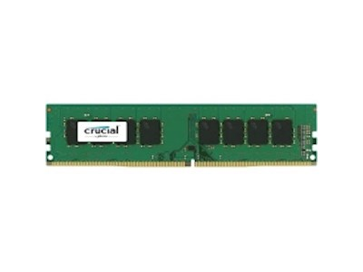
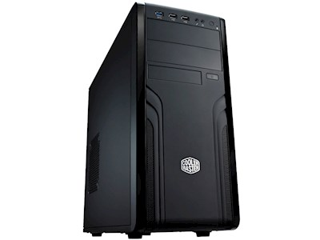
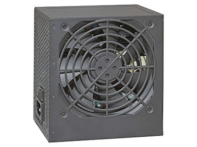
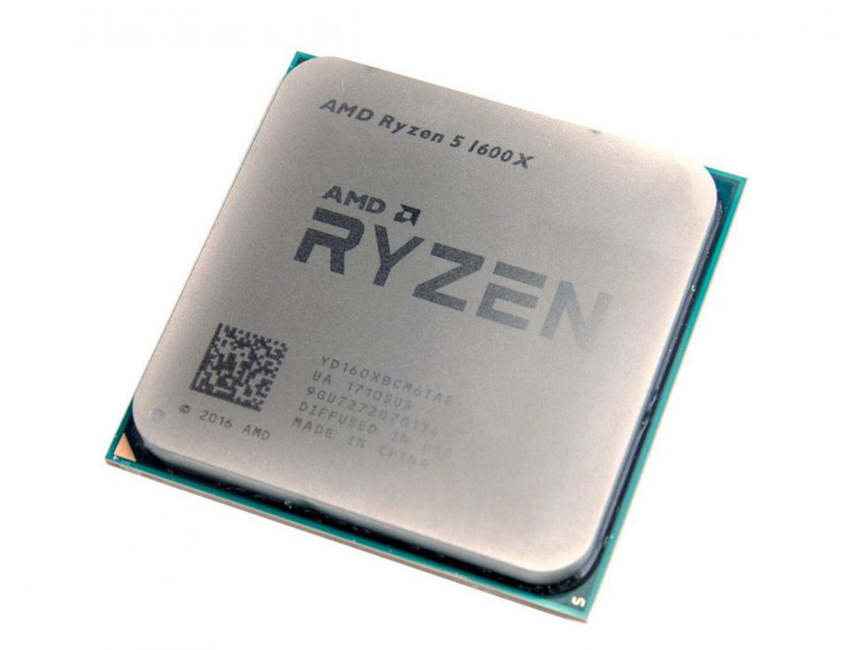
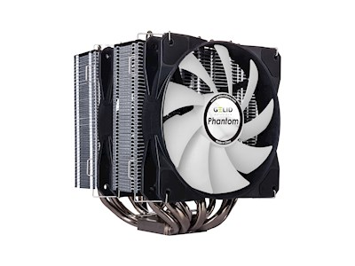
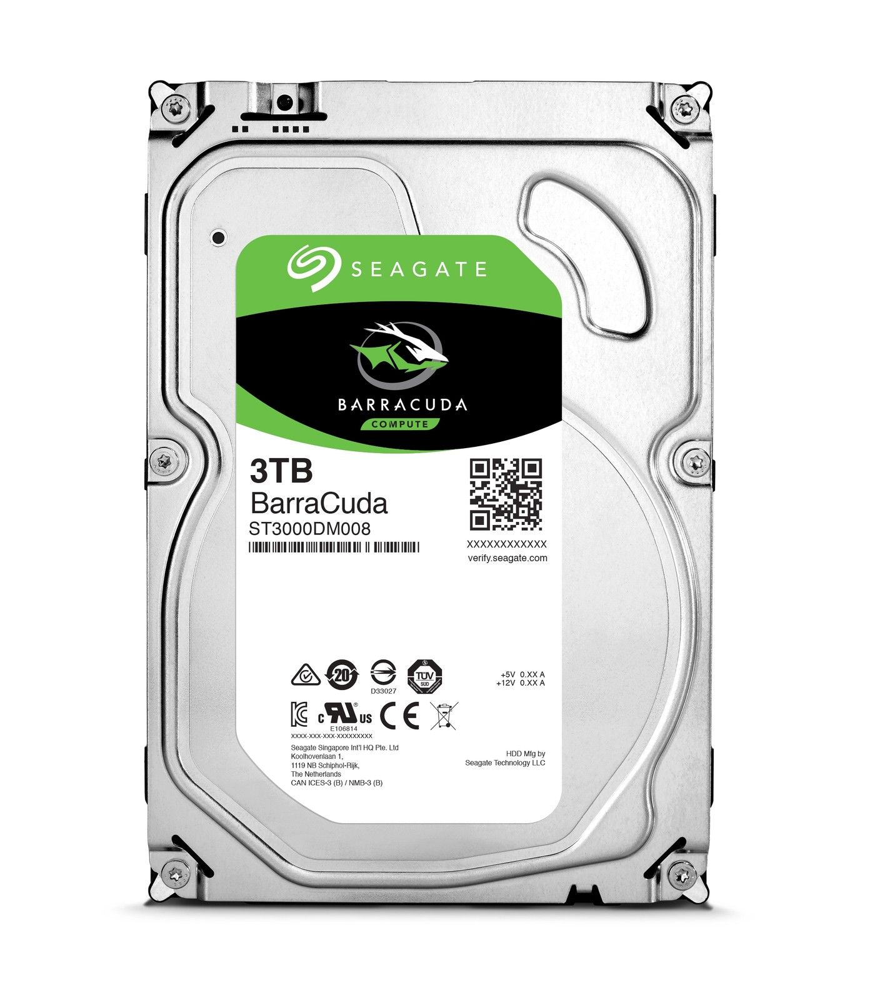
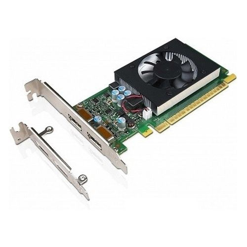

Building a computer 09-05-18
I finally decided to upgrade my work computer and build a new one! After spending loads of time reading and comparing I landed on the following parts:
|  | 16GB RAM card | €169 |
|  | Computer case - mid-tower | €44.90 |
|  | Power supply - 550watt | €58 |
 |
AMD motherboard - Asus prime X370-PRO | €139 |
|  | AMD processor - Ryzen 5 1600X | €215 |
|  | Processor cooler | €47.90 |
|  | 3TB harddrive | €103.94 |
|  | 2GB Lenovo graphics card | - |
| Total | €777.74 |
My aim was to build a completely upgradable computer improvement to my current machine - a windows computer with 32GB of RAM, a i7-3770 quad-core processor and a 1TB harddrive that will continue to be used.
Being my first build, I made a blunder. I covered the processor and motherboard with thermal paste!! Note to self, with this cooler it is easier to attach it to its braces and then the braces to the motherboard! Aside from that, just a few plugs not in the right place.
After working out how to attach the cooler and changing a couple of plugs, I am happy to say the new machine is running perfectly. It is extremely fast and I am looking forward to taking full advantage of its six cores!!! Here are some photos of the final build:
I used pcpartpicker to help me choose compatible parts, as well a great deal of advice from Tom, and Damien! I used Komplett to purchase most of the parts, recommended by Tom, as its prices were among the cheapest and it had a really wide range of computer parts available.
As you'll see from the photos, the motherboard comes with its own light show!
I chose an AMD processor (and compatible motherboard) because they are considerably cheaper than Intel's and now run at similar speeds - especially for parallel processing. The Ryzen 5 1600X is an extremely fast processore, which is capable of overclocking (going even faster!), which has six cores making it possible to run 12 threads (tasks) in parallel.
The cooler was probably overkill and was fiddly to install, but it does mean that I'll not need to worry about my processor (or future AMD or Intel processors) ever overheating.
I'm running this machine using Ubuntu - a freely available open-source operating system. After relying on Windows and Mac throughout my PhD and using Ubuntu via virtual box, I decided it was time to fully commit to the amazing Ubuntu project.
An expensive build, but a good bit cheaper than buying it built already and it taught me a lot! If you're needing a new computer, building your own is the way to go!!!